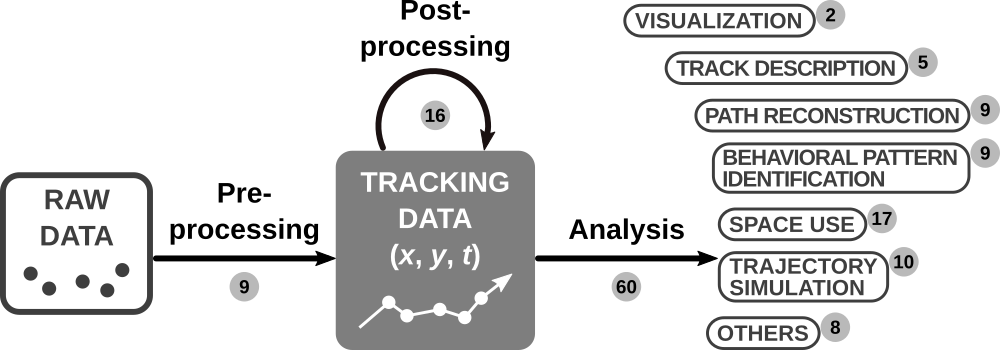

This CRAN Task View (CTV) contains a list of packages useful for the processing and analysis of tracking data.
Besides the maintainers, the following people contributed to the creation of this task view: Achim Zeileis, Edzer Pebesma.
Movement of an object (both living organisms and inanimate objects) is defined as a change in its geographic location in time, so movement data can be defined by a space and a time component. Tracking data are composed by at least 2-dimensional spatial coordinates (x,y) and a time index (t), and can be seen as the geometric representation (the trajectory) of an object's path. The packages listed here, henceforth called
tracking packages
, are those explicitly developed to either create, transform or analyze tracking data (i.e. (x,y,t)), allowing a full workflow from raw data from tracking devices to final analytical outcome. For instance, a package that would use accelerometer, gyroscope and magnetometer data to reconstruct an objects's trajectory—most likely an animal's trajectory—via dead-reckoning, thus transforming those data into an (x,y,t) format, would fit into the definition. However, a package analyzing accelerometry series to detect changes in behavior would not fit. See more on this in
Joo
et al.
(2019)
. Regarding (x,y), some packages may assume 2-D Euclidean (Cartesian) coordinates, and others may assume geographic (longitude/latitude) coordinates. We encourage the users to verify how coordinates are processed in the packages, as the consequences can be important in terms of spatial attributes (e.g. areas and angles).
The packages included here are mainly tracking packages though we include a subsection of other movement-related packages. The packages are mainly from CRAN and a few of them are from other repositories. The ones that are not from CRAN were only included if they passed the check test (
R CMD check; more details
here
). Core packages are defined as the group of tracking packages with the highest number of mentions (
Depends,
Imports,
Suggests) from other tracking packages; the cutpoint is estimated using the
maxstat_test
function in the
coin
package. At the beginning and middle of each calendar year, we will update the CTV, making an assessment on the non-CRAN packages here and remove the non-CRAN packages that do not pass the check test. Bioconductor packages are automatically accepted here as they are required to pass by a similar scrutiny than CRAN packages. We are also open to include more packages every time we update the CTV. We welcome and encourage contributions to add packages at any time. You can contact the maintainers by opening an issue on the
GitHub repository
.
Besides these packages, many other packages contain functions for data processing and analysis that could eventually be used for tracking data or second/third degree variables obtained from tracking data; we encourage users to check other CRAN Task Views like
SpatioTemporal,
Spatial
and
TimeSeries.
This CTV was inspired on the review of tracking packages by
Joo
et al.
(2019)
, as an attempt to continuously update the list of packages already described in the review. Therefore, the CTV takes a similar structure as the review.

Pre-processing
Pre-processing is required when raw data are not in a tracking data format. The methods used for pre-processing depend heavily on the type of biologging device used. Among the tracking packages, some of them are focused on GLS (global location sensor), others on radio telemetry, and others use accelerometry and magnetometry data.
-
GLS data pre-processing:
Several methodologies have been developed to reduce errors in geographic locations generated from the light data, which is reflected by the large number of packages for pre-processing GLS data. We classified these methods in three categories: threshold, curve-fitting and twilight-free.
-
Threshold methods:
Threshold levels of solar irradiance, which are arbritrarily chosen, are used to identify the timing of sunrise and sunset. The package that uses threshold methods are
GeoLight
and
SGAT.
-
Curve-fitting methods:
The observed light irradiance levels for each twilight are modeled as a function of theoretical light levels (i.e. the template). Then, parameters from the model (e.g. a slope in a linear regression) are used to estimate the locations. The formulation of the model and the parameters used for location estimation vary from method to method. The packages that use curve-fitting methods are
FLightR,
tripEstimation
and
SGAT.
-
Dead-reckoning using accelerometry and magnetometry data:
The combined use of magnetometer and accelerometer data, and optionally gyroscopes and speed sensors, allows to reconstruct sub-second fine scale movement paths using the dead-reckoning (DR) technique.
animalTrack
and
TrackReconstruction
implement DR to obtain tracks, based on different methods.
Post-processing
Post-processing of tracking data comprises data cleaning (e.g. identification of outliers or errors), compressing (i.e. reducing data resolution which is sometimes called resampling) and computation of metrics based on tracking data, which are useful for posterior analyses.
-
Data cleaning:
argosfilter,
foieGras
and
SDLfilter
implement functions to filter implausible platform terminal transmitter (PTT) locations.
SDLfilter
is also adapted to GPS data. Other packages with functions for cleaning tracking data are
TrajDataMining
and
trip.
-
Data compression:
Rediscretization or getting data to equal step lengths can be achieved with
adehabitatLT,
trajectories
or
trajr. Regular time-step interpolation can be performed using
adehabitatLT,
amt
or
trajectories. Other compression methods include Douglas-Peucker (TrajDataMining
and
trajectories), opening window (TrajDataMining) or Savitzky-Golay (trajr).
rsMove
provides functions to explore and transform tracking data for a posterior linkage with remote sensing data.
-
Computation of metrics:
Some packages automatically derive second or third order movement variables (e.g. distance and angles between consecutive fixes) when transforming the tracking data into the package's data class. These packages are
adehabitatLT,
momentuHMM,
moveHMM
and
trajectories.
bcpa
has a function to compute speeds, step lengths, orientations and other attributes from a track.
amt,
move,
segclust2d,
trajr
and
trip
also contain functions for computing those metrics, but the user needs to specify which ones they need to compute.
VTrack
is specifically for acoustic telemetry data, and compute statistics from those data.
Visualization
The packages mainly developed for visualization purposes, and more specifically, animation of tracks, are
anipaths
and
moveVis.
Track description
amt
and
trajr
compute summary metrics of tracks, such as total distance covered, straightness index and sinuosity.
trackeR
was created to analyze running, cycling and swimming data from GPS-tracking devices for humans.
trackeR
computes metrics summarizing movement effort during each track (or workout effort per session).
Path reconstruction
Whether it is for the purposes of correcting for sampling errors, or obtaining finer data resolutions or regular time steps, path reconstruction is a common goal in movement analysis. Packages available for path reconstruction are
argosTrack,
BayesianAnimalTracker,
bsam,
crawl,
ctmcmove,
ctmm,
foieGras
and
TrackReconstruction.
Behavioral pattern identification
Another common goal in movement ecology is to get a proxy of the individual's behavior through the observed movement patterns, based on either the locations themselves or second/third order variables such as distance, speed or turning angles. Covariates, mainly related to the environment, are frequently used for behavioral pattern identification.
We classify the methods in this section as: 1) non-sequential classification or clustering techniques, 2) segmentation methods and 3) hidden Markov models.
-
Non-sequential classification or clustering techniques:
Here each fix in the track is classified as a given type of behavior, independently of the classification of the preceding or following fixes (i.e. independently of the temporal sequence). The packages implementing these techniques are
EMbC
and
m2b.
-
Segmentation methods:
They identify change in behavior in time series of movement patterns to cut them into several segments. The packages implementing these techniques are
adehabitatLT,
bcpa,
segclust2d
and
marcher.
-
Hidden Markov models:
They are centered upon a hidden state Markovian process (representing the sequence of non-observed behaviors) that conditions the observed movement patterns. The packages implementing these methods are
bsam,
moveHMM
and
momentuHMM.
Space and habitat use characterization
Multiple packages implement functions to help answer questions related to where individuals spend their time and what role environmental conditions play in movement or space-use decisions, which are typically split into two categories: home range calculation and habitat selection.
-
Home ranges:
Several packages allow the estimation of home ranges, such as
adehabitatHR,
amt,
BBMM,
ctmm,
mkde
and
move. They provide a variety of methods, from simple Minimum convex polygons to more complex probabilistic Utilization distributions, potentially accounting for the temporal autocorrelation in tracking data.
-
Habitat use:
The role of habitat features on animal space use, or habitat selection, can be investigated wih
adehabitatHR,
amt,
BBMM,
ctmm,
mkde
and
move. They provide a variety of methods, from simple Minimum convex polygons to more complex probabilistic Utilization distributions, potentially accounting for the temporal autocorrelation in tracking data.
-
Non-conventional approaches for space use:
Other non-conventional approaches for investigating space use from tracking data can be found in
recurse,
rsMove
and
VTrack.
Trajectory simulation
The tracking packages implement trajectory simulation are mainly based on Hidden Markov models, correlated random walks, Brownian motions, Lévy walks or Ornstein-Uhlenbeck processes:
adehabitatLT,
moveHMM,
momentuHMM,
bsam,
crawl,
argosTrack,
ctmm,
smam,
SiMRiv
and
trajr.
Other analyses of tracking data
-
Interactions:
Interactions between individuals can be assessed using metrics from
wildlifeDI
and
TrajDataMining.
spatsoc
groups relocations within a same time-period or a same spatial range, and allows computing distances between individuals in the group and identifying nearest neighbors.
-
Movement similarity:
Measures such as the longest common subsequence, Fréchet distance, edit distance and dynamic time warping could be computed with
SimilarityMeasures
or
trajectories.
-
Population size:
caribou
was specifically created to estimate population size from Caribou tracking data, but can also be used for wildlife populations with similar home-range behavior.
-
Inferring environmental conditions:
moveWindSpeed
uses tracking data to infer wind speed.
-
Database management:
rpostgisLT
handles database management for trajectory data by integrating R and the "PostgreSQL/PostGIS"" database system.
Dealing with movement but not tracking data
-
Analysis of biologging data:
Packages to analyze time-depth recorder (TDR) and accelerometer data from animals is
diveMove. It allows obtaining statistics of dive effort. Several packages focus on the analysis of human accelerometry data, mainly to describe periodicity and levels of activity:
acc,
accelerometry,
GGIR,
nparACT,
pawacc
and
PhysicalActivity.
-
Non-biologging video and images:
When a camera can encompass an area large enough for an individual to move in, video and images can be used to record movement. Packages related to these data are
SwimR
(for individuals moving in assay plates) and
trackdem
(processing frame-by-frame images).